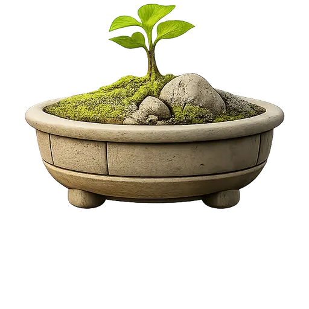
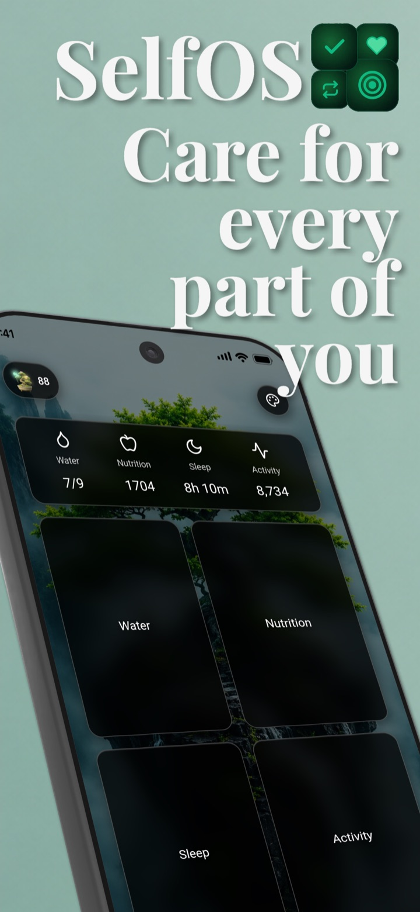
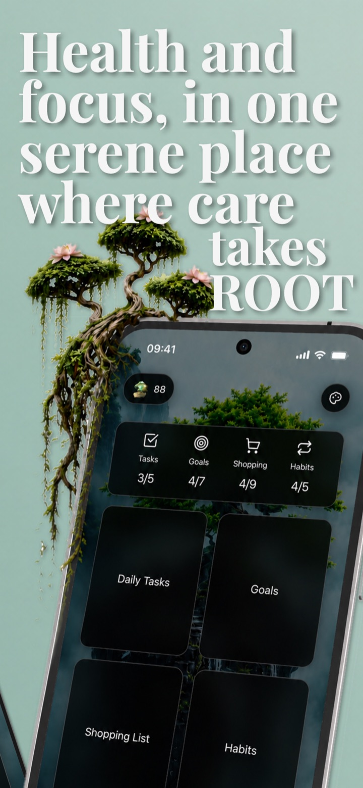
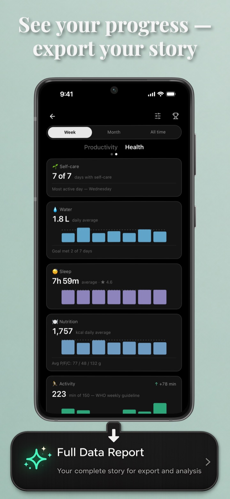
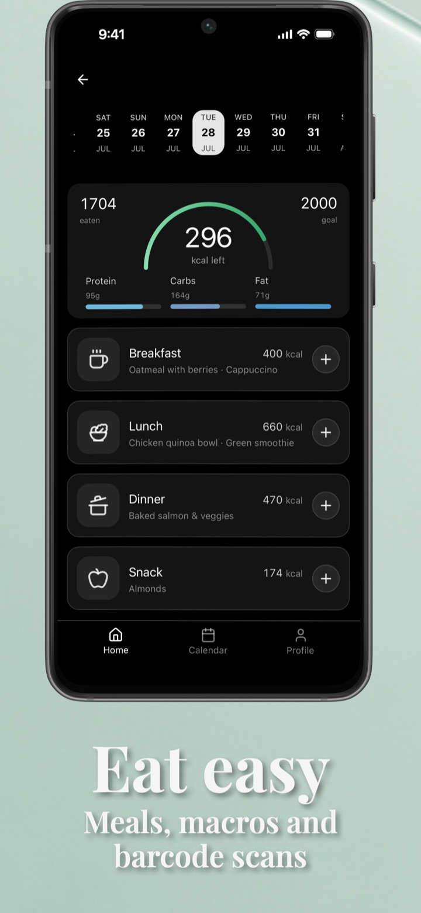
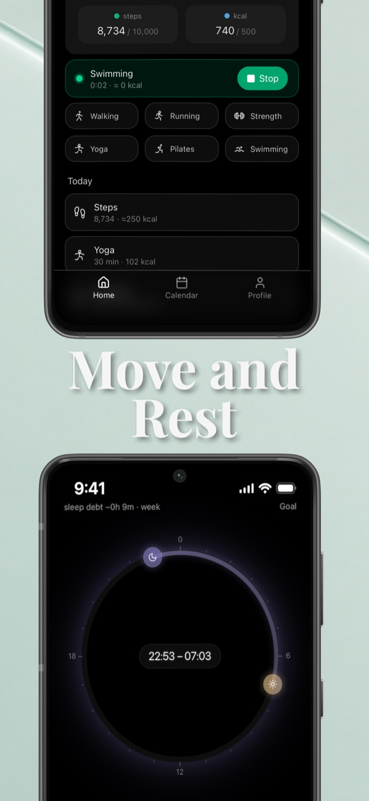
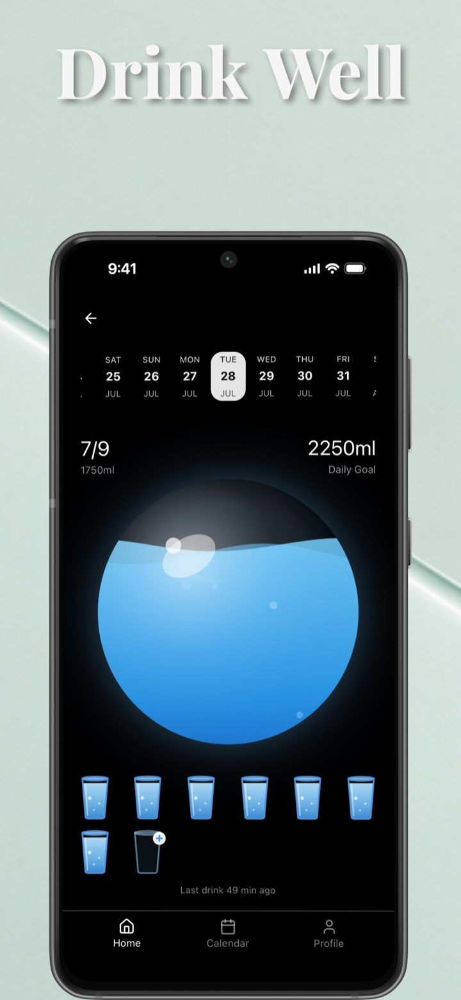
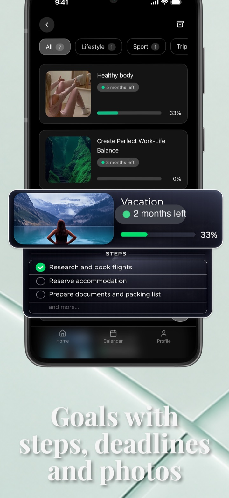
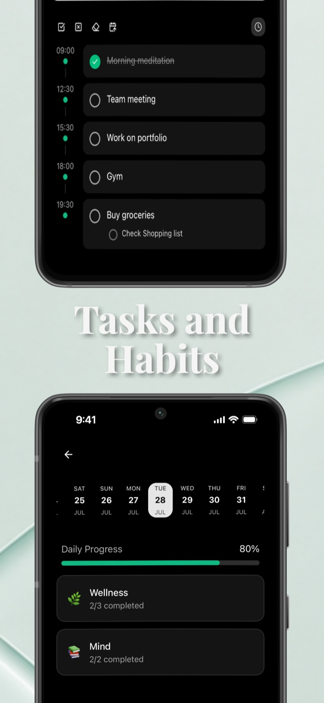
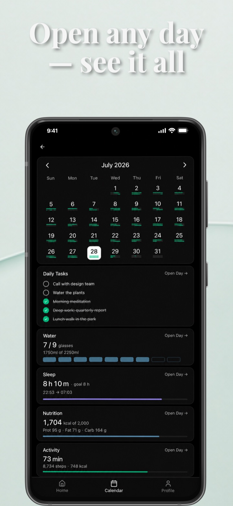

SelfOS · Self-Care Tracker
Water, meals, sleep, activity, tasks, goals and habits - in one calm app. And a bonsai that grows from your daily self-care.
Free · no sign-up · your data stays on your phone
A self-care tracker and daily planner for iOS and Android: habit tracker, goal tracker, water, sleep, nutrition and activity trackers that talk to each other, instead of eight apps that don't.
Care for you
One tap per glass, a daily goal, gentle reminders.
Food search, barcode scan, macros without the spreadsheet.
Bedtime, wake-up, sleep debt for the week.
Steps, workouts and minutes against the weekly guideline.
Care for your day
A day on a timeline, with time slots, subtasks and repeats.
Big dreams broken into steps, with deadlines and photos.
Flexible schedules, streaks and daily progress.
Groceries and more, by category, checked off in a tap.
It grows from the small things you do for yourself: a glass of water, a finished task, a night of sleep. It is the gentlest streak you will ever keep.

Dark, quiet screens. Numbers you can read at a glance.

Care for every part of you

Health and focus in one place

See your progress, export your story

Eat easy: meals, macros, barcodes

Move and rest

Drink well

Goals with steps, deadlines and photos

Tasks and habits

Open any day, see it all
Self-care data is personal. SelfOS treats it that way.
Your tasks, meals, sleep and water live on your device. No sign-up, no ads, no ad tracking. Only anonymous usage statistics and crash reports, and you can switch them off in settings.
Export or import all your data as a file from Profile, for backups or a new phone. And the Full Report gathers everything the app knows into one file, handy for your own analysis or your doctor.
Short answers to what people ask most.
Yes. All eight modules, including every health tracker, work for free. The free tier has limits on volume: 2 goals, 20 active tasks, 2 habit categories, 1 shopping list, 3 custom dishes and 3 full reports. Premium removes the limits and adds automatic calendar sync, themes and backgrounds, with a 7-day free trial on the yearly plan. Prices are shown in your store in your currency.
English, Ukrainian and Russian. The app follows your phone's language.
Yes. Core features work without a connection. The internet is only needed for food search and barcode scanning.
Not yet. Health sync and home screen widgets are the next big things on the roadmap.
Yes. If you heard about SelfOS in a video or a thread, this is the one: the self-care tracker by Viktoriia Smyrnova, with the tree on the home screen. There are other apps with a similar name.
For the days you're thriving and the days you're just surviving.
SelfOS is my attempt to create a quiet place within the noise - a space where you can gather your thoughts, gently set your priorities, and regain a sense of control.
We've grown used to living in a constant switching mode, losing focus and energy along the way. I created SelfOS as a personal operating system for life - calm, intuitive, and designed so that every task, thought, and goal has its place.
May this space help you find a little more inner harmony and peace.
Thank you for being here.
- Viktoriia
Free on iPhone and Android. No sign-up, no complicated setup - just start with yourself.